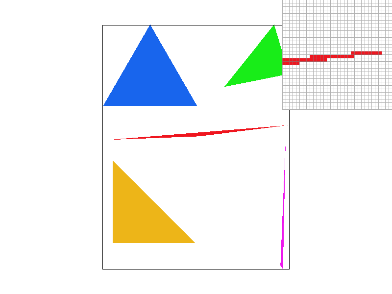
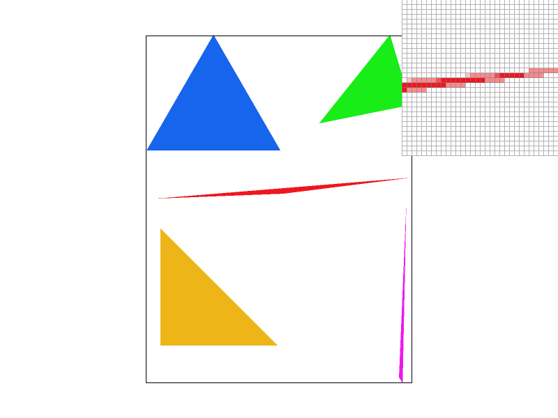
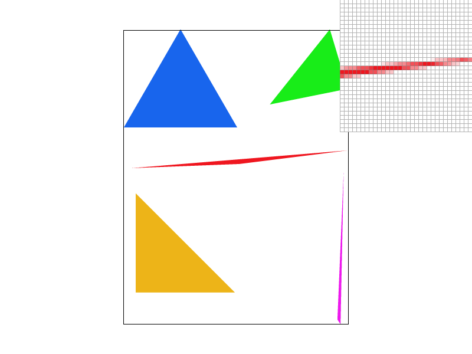

CS184/284A Spring 2025 Homework 1 Write-Up
Link to webpage: (TODO) cs184.eecs.berkeley.edu/sp25
Link to GitHub repository: (TODO) cs184.eecs.berkeley.edu/sp25

Overview
Over the past few weeks and 6 tasks I was able to implement a basic rasterizer that can take SVG files and accurately render them out using a variety of techniques. This rasterizer can perform basic supersampling to help deal with aliasing up to 16x, perform barycentric interpolation, and use level and pixel sampling to map textures to surfaces at various antialiasing levels. I had a lot of fun getting back into C++ and seeing how to implement the high level mathematical concepts learned in class into code (though my git commit messages suggest there was some pain along the way :)).Task 1: Drawing Single-Color Triangles
Given 3 points, we first reduce the area of the bounding box by finding the maximum and minimum x and y values from the points passed in. Then for each x and y position, we sample at the center of the pixel (an offset of 1/2 from the x or y position), then perform 3 half plane checks to see if the point is within the triangle. Since we need to be able to deal with either cw or ccw winding order, we check if all edge checks or either all \(<= 0\) or \(>= 0\), if either is true, we can be sure that the pixel is inside the triangle and we color it.
Our algorithm still iterates over every pixel and sub-sample inside the triangle’s bounding box, just like a naïve implementation. The difference is that instead of recomputing edge functions from scratch for each sample, we incrementally update them using precomputed coefficients. This does not change the number of samples tested, so the asymptotic complexity remains the same, but it reduces the per-sample computation. Thus, the algorithm is no worse than checking each sample in the bounding box, and is strictly more efficient in practice.

EC optimizations
In terms of optimizations, previously I computed the edge tests for every point from scratch inside the loop, which especially when supersampling came into the picture would slow down rendering. Since the edge checks are linear functions of the form \( Ax + By + C\), we can just increment the As and Bs as the loop progresses and cut out expensive multiplication calculations, I found that by and by only putting simple calculations inside the loops we cut down our computation and see the following gains. I did consider putting similar optimizations inside tasks 4 and 5/6. However, after encountering some funky artifacts that took too long to even diagnose, they were scrapped, which explains why supersampling on test7.svg or anything in the texmap folder take much longer than anything in the basic folder. A future goal is to return to those functions and implement those optimizations.
Task 2: Antialiasing by Supersampling
- The main idea behind supersampling is to partition each individual pixel into smaller sections so that we can increase the sampling density, resulting in a more finer detail output.
- To draw the actual pixels on to the screen, a section of the rasterization pipeline includes resolving the sample buffer to the framebuffer. The sample buffer contains CGL Color data types; however, the framebuffer is an array of floats so "resolving" simply means converting the Color types into floats.
- When we supersample, we can increase or decrease the sampling rate. To accomodate the sampling rate change, we have to modify a couple of places. First, we have to adjust the size of the sample_buffer depending on the sampling rate. In
RasterizerImp::set_sample_ratewe resize the sample buffer tosample_rate * width * height. We do the same inRasterizerImp::set_framebuffer_target. - In our main rasterization logic in
RasterizerImp::rasterize_triangle, we multiply our loop start and end bounds bysqrt(sample_rate)to increase/decrease the density of the grid. To calculate the new coordinate of the sample point, we need to additionally find the inner offset of supersample pixel in relation to the main coordinate before we supersampled. - Pixel coordinate (without supersample offset): \((\frac{x}{\sqrt{sample\_rate}}, \frac{y}{\sqrt{sample\_rate}})\)
- Supersample offset: \((x \bmod \sqrt{sample\_rate}, y \bmod \sqrt{sample\_rate}) \)
- Modifying
RasterizerImp::fill_pixel: - For a pixel, we need to fill in all of the supersampled pixels to fix points and lines as we don't really care about supersampling for them. So within this function, we just fill the supersample pixels the same color.
- Averaging pixels in
RasterizerImp::resolve_to_framebuffer: - The final step of supersampling is to average the neighboring pixels and set it back to the main pixel. In
RasterizerImp::resolve_to_framebuffer, we are taking the average color rgb values from all the supersampled pixels of area \(sample\_rate\) to set it to the pixel in the framebuffer representing all of the supersampled pixels.
- Putting it all together, our supersample pixel coordinate would is \((pixel\_x + \frac{(ss\_offset\_x + 0.5f)}{\sqrt{sample\_rate}}, pixel\_y + \frac{(ss\_offset\_y + 0.5f)}{\sqrt{sample\_rate}})\)
- To set the correct index in the sample buffer, the updated index is \((y * width + x) * sample\_rate + ss\_offset\_y * \sqrt{sample\_rate} + ss_offset_x\)
|

|

|
|

|
We can see that as the sampling rate per pixel increases, the averaging of neighboring pixels becomes more apparent. When we sample 1 per pixel, there are missing gaps and artifacts as a result of this aliasing.
As we increase the sampling rate, the averaging step that we perform in RasterizerImp::resolve_to_framebuffer helps "fill" in the gap to provide a more smooth edge so that it looks more continuous.
Since we are subdividing a pixel into more squares, when we average it acts like a low pass filter so that the averaged pixel smooths out sharp discontinuities and reduces high frequencies.
Task 3: Transforms
I performed a simple transformation by rotating every limb except the left leg to form a k shape with the robot. since some of the rotation points are not at the points where the limbs are closest to the torso, I had to perform slight translations to get the limbs to line back up with the body.
Task 4: Barycentric coordinates
Barycentric coords are a way of checking if a point is inside the triangle using its distance from a vertex. The weights alpha, beta, and gamma must sum to 1 and tell us how much that vertex affected the point. If all weights are non-negative, the point is inside the triangle and the pixel's color is determined by a weighted sum of alpha, beta, and gamma multiplied against each of the 3 colors we are interpolating. In the provided example, the vertexes are red, green and blue, and the color is determined by which of the vertices the point is closer to, one closer to the blue vertex is more blue, while one in the middle, with alpha, beta, and gamma being nearly equal, is mix of all 3 colors.

Task 5: “Pixel sampling” for texture mapping
Pixel sampling is how we determine the color of a pixel when using continuous textures onto a discrete screen of pixels. To implement this, I march over each pixel in the bounding box, calculate its barycentric coordinates. If the point is inside the triangle, we interpolate the uv coordinates, which are then mapped to the texture space and sampled according to the chosen sampling method.
In nearest sampling, we select the closest texel (the smallest unit that makes up the texture), and take that color, but this produces sharp and blocky results, which can look bad far away. In bilinear sampling, we do a similar process to supersampling in which we interpolate between 4 surrounding texels, and calculate a weight sum based on the fractional change in the x and y directions which produces a smoother final product.
I used texmap/test1.svg for all 4 screenshots
While at a glance nearest can be distinguished from bilinear thanks to its blockiness, the difference is amplified when textures are magnified or have detail at high frequency, since bilinear will smooth out that higher frequency detail to reduce aliasing while nearest will allow pixelated rendering.
Task 6: “Level sampling” with mipmaps for texture mapping
- When we are working with mipmaps, level sampling is how we choose which mipmap level to sample from when texturing a surface. A mipmap contains the same texture but at different resolutions and scales. When applying a texture to the scene, pixels that are close to the user require a higher level of detail so we choose a mipmap with a lower level. Lower level mipmaps have higher resolution and higher level mipmaps have lower resolution. For pixels further away, we choose a higher level since it requires lower detail due to many texels per pixel.
-
For our implementation, in
RasterizerImp::rasterize_textured_triangle, we find the barycentric u, v vectors for the sample point(x, y),(x + 1, y), and(x, y + 1). The latter two translate into \((\frac{du}{dx}, \frac{dv}{dx})\) and \((\frac{du}{dy}, \frac{dv}{dy})\) respectively. But we needed to find two difference vectors \((\frac{du}{dx})\) -sp.p_uv*widthand \((\frac{du}{dy})\) -sp.p_uv*height. We use these as our representations for \((\frac{du}{dx}, \frac{dv}{dx})\) and \((\frac{du}{dy}, \frac{dv}{dy})\) with respect to our texture dimensions. Next, we use the equation from the lecture slides \(L = max(\sqrt{(\frac{du}{dx})^2 + \frac{dv}{dx})^2}, \sqrt{(\frac{du}{dy})^2 + (\frac{dv}{dy})^2})\), \(D = log_2{L}\) where \(D\) is the mipmap level. -
For
L_LINEAR, we get a continuous (as a float) representation of the mipmap level. Then, we get the upper and lower levels bounding it, sample based on the point sampling method, and finally lerpcontinuous_level - lower_levelbetween the two sampled colors.
Pixel Sampling - Speed: Pretty fast as when in NEAREST we are performing 1 lookup and for LINEAR we are performing 4 lookups.
- Memory Usage: Constant since we are just using the original pixels in the image.
- Antialiasing Power: Limited as aliased lines will still appear to be blocky and may still contain artifacts.
Level Sampling - Speed: Slower than pixel sampling, but still faster than number of samples per pixel due to performing calculations for finding the appropriate mipmap level.
- Memory Usage: Higher, as we need to store the mipmap texture.
- Antialiasing Power: Good against texture minification and preventing moiré patterns.
Number Of Samples Per Pixel - Speed: Very slow as the cost scales linearly with sample number.
- Memory Usage: Our sample buffer size increases linearly with the sample number.
- Antialiasing Power: Best all of the three, but very expensive.

|

|

|

|